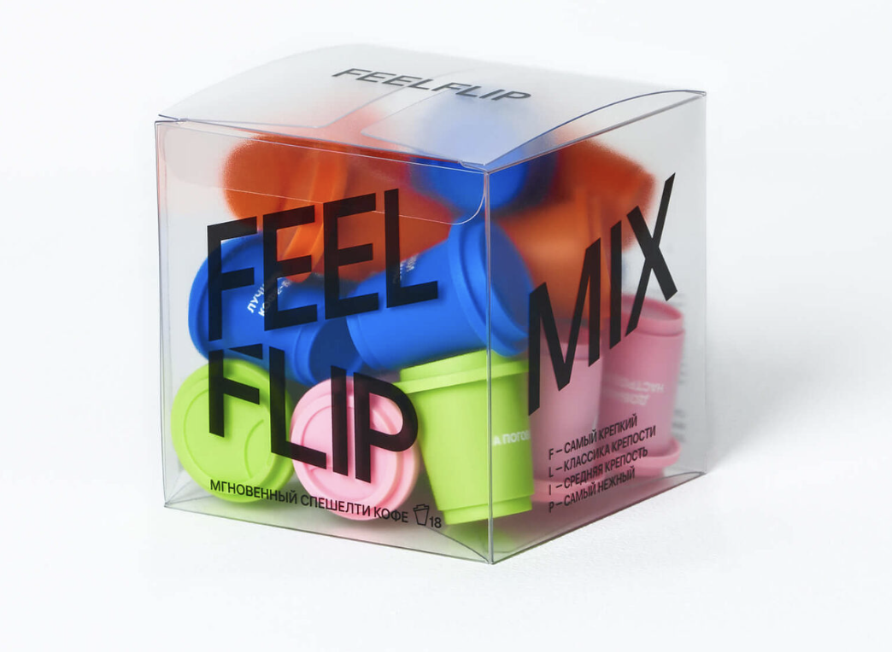
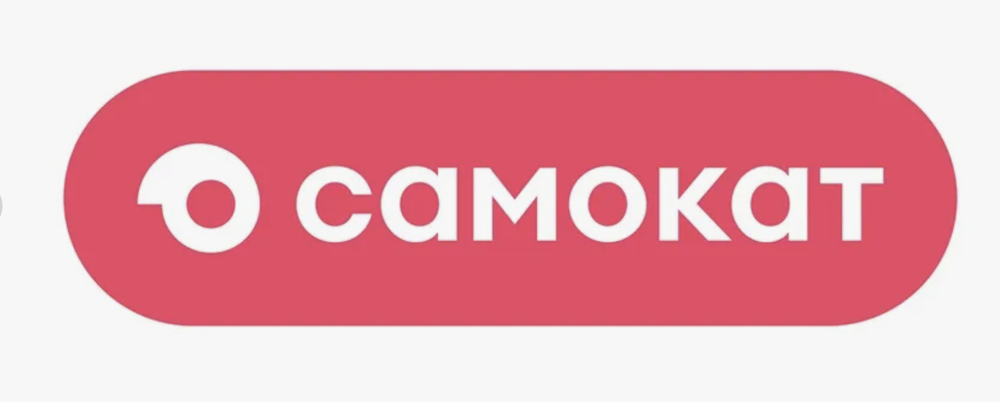

Проекты 🚀¶
Рабочие проекты 🦋¶
-
Ивенты и хакатоны по всему миру
Организую мероприятия для членов международного бизнес-сообщества. В рамках хакатонов выступаю ментором и координирую участников.
Моя роль: ивент-менеджер, ментор и координатор.
-
CRM для собственных рабочих задач
Разработала CRM-систему в административной панели сообщества и оптимизировала часть своих рабочих процессов.
Формат: внутренний инструмент сообщества.
Учебные проекты 🚀¶
Маркетинг, социальные инициативы и собственный продукт — проекты, над которыми я работаю в рамках обучения.
-

☕ FeelFlip — маркетинговая стратегия
Работа над маркетинговой стратегией для кофе FeelFlip.
Направление: маркетинг и продвижение бренда.
-

💗 «Самокат» — социальный проект
Разработка социального проекта для продуктового ритейлера «Самокат».
Направление: социальные инициативы в ритейле.
-
🍽️ DineGuard — бронирование столов
Работаю над собственным проектом DineGuard для бронирования столов в ресторанах.
Направление: ресторанные сервисы и развитие собственного продукта.
Практика по веб-технологиям 💻¶
Проекты по курсу «Введение в веб технологии»: технологии, выполненные задачи и результаты.
-
01 / Репозиторий и рабочее окружение
Подготовка Git-репозитория, README и правил участия. Работа с веткой разработки, Pull Request и слиянием изменений.
Технологии: Git · GitHub · SSH · Markdown
Результат: создан репозиторий, оформлена документация, изменения объединены через Pull Request.
-
02 / Flask в Docker и CI/CD
Контейнеризация небольшого веб-приложения и подготовка автоматической сборки с проверкой HTTP-ответа в GitHub Actions.
Технологии: Python · Flask · Docker · GitHub Actions
Результат: сборка и функциональные проверки выполнены локально и в CI. Публикация в Docker Hub ожидает настройки секретов; сквозной деплой ещё не подтверждён.
-
03 / Мониторинг учебной среды
Локальный стенд из Prometheus, Node Exporter, Grafana и Nginx. Настройка дашборда и изучение безопасности конфигурации учебного веб-сервера.
Технологии: Docker Compose · Prometheus · Grafana · Nginx
Результат: настроен сбор метрик Linux-среды Docker и визуализация CPU, памяти и диска. Эти показатели не являются прямыми метриками macOS.
Материалы сохранены локально; публичная версия этой работы пока не размещена.
Этот сайт — ещё один практический результат ✨¶
Портфолио написано на Markdown и собирается с помощью MkDocs Material. Навигация, поиск, переключатель темы и оформление задаются в конфигурации и таблице стилей.